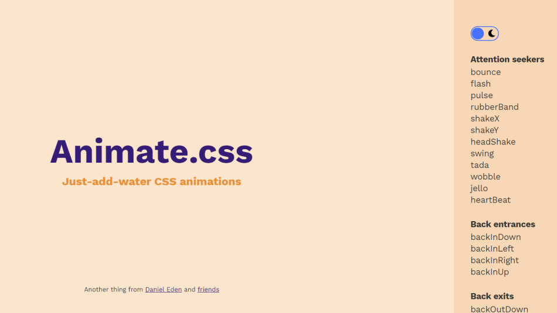

Animate.css 是一個純 CSS 的動畫特效庫，支援非常多種動畫效果，在他們的官網當中，
只要點選右方的動態名稱就可以即時觀看特效。
如何安裝
有三種安裝方式，使用 CDN 、 NPM 以及 YARN：
CDN - 將點擊以下程式碼後貼上到 head 當中
<link
rel = "stylesheet"
href = "https://cdnjs.cloudflare.com/ajax/libs/animate.css/4.1.1/animate.min.css"/>
NPM - 使用 NPM 安裝
npm install animate.css --save
NPM - 使用 YARN 安裝
yarn add animate.css
如何使用
安裝 Animate.css 之後，只要在需要加動畫的標籤或元素上，將 animate__animated
( 這個前綴一定要加！ ) 以及所需要用到的動畫校果添加到 class 。
<h1
class = "animate__animated animate__tada">Starburst Stream</h1>
使用 @keyframes
使用 @keyframes 的方式，從 CSS 為元素添加動畫 keyframe 和設定持續時間。
.kirito {
width: 87px;
height: 63px;
white-space: nowrap;
animation: bounce;
/* 動畫 @keyframe 的名稱 */
animation-duration: 2s;
/* 設定持續時間 */
}
自定義 CSS 屬性
使用 CSS Variables 的方式來定義動畫的持續時間和延遲時間，
使得 Animate.css 更為靈活，並且更多可客製化的屬性。
如需要更改動畫時間，只需要額外將新的數值添加到你所需的動畫名稱上，或是更改全部的動畫時間：
/* 更改 特定 的動畫持續時間 */
.animate__animated .animate__tada {
--animate-duration: .5s;
}
/* 更改 全部 的動畫持續時間、延遲時間 */
:root {
--animate-duration: .5s
--animate-delay: .9s;
}
實用的元素
Animate.css 還提供了許多實用的元素
延遲執行動畫
可以直接在元素上添加 deleys ：
<div class =
"animate__animated animate__tada animate__delay-2s">Starburst Stream</div>
| 指定元素名稱 |
默認延遲時間 |
| animate__delay-2s |
2s |
| animate__delay-3s |
3s |
| animate__delay-4s |
4s |
| animate__delay-5s |
5s |
動畫速度
可以直接在元素上添加特定元素來控制動畫速度快慢：
<div class =
"animate__animated animate__tada animate__faster">Starburst Stream</div>
| 指定元素名稱 |
默認動畫速度 |
| animate__slow |
2s |
| animate__slow |
3s |
| animate__fast |
800ms |
| animate__faster |
500ms |
迭代次數
可以直接在元素上添加特定元素來控制動畫的迭代次數：
<div class =
"animate__animated animate__tada animate__repeat-2">Starburst Stream</div>
| 指定元素名稱 |
默認迭代次數 |
| animate__repeat-1 |
1 |
| animate__repeat-2 |
2 |
| animate__repeat-3 |
3 |
| animate__infinite |
infinite |